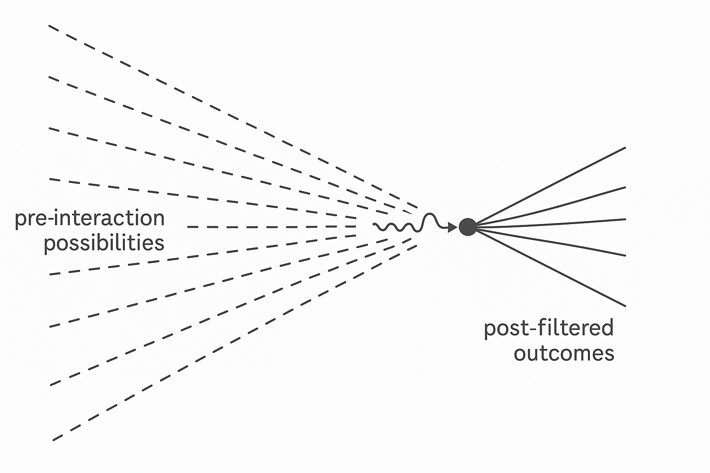

Jonathan Maram
May 2025
The standard accounts of quantum collapse give us many actors: detectors, wavefunctions, fields, observers. But they rarely clarify when collapse occurs—or why.
That is because most explanations smuggle in a hidden category: representation. They imply that something was known, or at least could have been.
In the recursive constraint framework, observation does not require knowledge. It requires consequence.
When a photon encounters an electron, neither “knows” or “represents” the other. They do not model, predict, or decide. But they do interact—and, through recursive constraint satisfaction, filter each other. Not all outcomes of their encounter can be realized.
Some possibilities are excluded—not because a choice is made, but because structure is not viable.
The standard accounts of collapse give us many actors: detectors, wavefunctions, fields, observers. But they rarely explain when collapse occurs, or why.
That’s because most stories smuggle in a hidden category: representation. They imply something was known, or at least could have been.
But observation, in the recursive framework, doesn’t require knowledge. It requires consequence.
The photon and electron don’t represent each other. They don’t build models. But they do encounter — and filter — each other. Not all outcomes of that encounter can continue.
Some futures collapse, not because a choice was made, but because a structure was not viable.
Let us be more precise. What collapses is not the wavefunction. What collapses is the set of viable continuations: the solution set under all present constraints.
A wavefunction is a mathematical summary of what could happen, given certain assumptions. But the universe does not compute probabilities. It realizes structures—instantaneously, everywhere constraints are defined.
And realization requires recursive coherence.

Figure 1. A field of possible futures pruned
by interaction.
A photon (wavy arrow) approaches an
electron (solid circle) through a field of potential outcomes. Prior
to interaction, many paths are possible (dashed lines). After the
encounter, only a constrained set of continuable paths persists
(solid lines). This illustrates structural collapse as recursive
filtering, not as observation or decision.
This is collapse, in structural terms: not a mystery, but a revised set of constraints.
Imagine two spinning tops colliding. Neither is conscious. But each has a structure. When they collide, their internal coherence constrains what interactions are possible. Only some energy transfers, some directions persist.
Now abstract these tops into tension-bearing, recursively constrained structures. Each can persist only if it resolves any internal contradiction resulting from the encounter.
That is what happens when a photon and electron meet.
Each filters the other; each collapses relative to what it can
still realize.
It is not that one observes the other—it is
that both structures exclude nonviable continuations. The result is
mutual, perspectival collapse.
In this framework, interaction is not simply contact—it is the generator of new constraints. When two structures meet, their internal coherence and compatibility define what is possible for both from that point forward. Collapse, then, is not an event imposed from outside, but a structural fact that emerges wherever interaction introduces new constraints.
One lingering confusion is the question of when collapse “happens.”
Before the detector? After the event? When someone knows? When something changes?
In the realization framework, there is no universal timekeeper. Only structural filters.
Collapse occurs at the site of recursive constraint exclusion. It is local to the structure: where coherence is either maintained or lost through interaction.
That might be:
The exact moment a photon and electron interact,
A chain of internal realignments within a structure,
Or a shift whose full structural implications play out only once all constraints propagate.
But it is always local to the recursive constraint filter.
Consider the delayed choice quantum eraser.
A photon passes through a double slit. Downstream, we may choose—after the fact—whether to preserve or erase path information. This choice affects whether we see interference.
In traditional interpretations, it can seem as though the future “reaches back” to change the past.
But in the recursive constraint framework, there is no paradox.
Collapse does not occur at the slit, nor at the detector. It occurs wherever structural filtering by recursive constraint satisfaction excludes incompatible continuations. This may include the later measurement device, or the system as a whole. If no structure—slit, detector, apparatus—forces a resolution, coherence persists. Collapse only occurs when filtering occurs, not when we look.
This is a structural alignment, not a temporal causation.
Previously, we introduced ε₁: the capacity to filter tension and persist.
When two such structures interact, we begin to see ε₂: relational realization.
Here, each structure modulates the other. Not only filtering, but recursively adjusting their own internal constraints as a result of the encounter.
This is not awareness, but it is reciprocal shaping—a further recursive layer of constraint satisfaction.
Figure 3. Two ε₁ structures forming a
perspectival ε₂ interaction.
Two ε₁ structures —
each capable of independent recursive filtering — engage in mutual
influence. Solid arrows indicate directional modulation and recursive
adjustment. The dotted lines represent the narrowing set of shared
viable continuations: possible futures that remain coherent for both
structures. This perspectival pruning marks the emergence of ε₂ —
not just persistence, but co-filtered realization.
This is not “communication,” but co-constraint.
Who collapses what?
Each viable structure collapses the futures it cannot absorb.
When?
At the moment of recursive constraint incompatibility.
How?
By reducing the set of realizable configurations to those that jointly satisfy all recursive constraints.
Collapse is not an event. It is a filtering—a necessary consequence of structure.
From this perspective, the measurement problem is not a
paradox.
It is a misunderstanding of what kind of filtering
counts.
The early universe contained no minds, no instruments, no models. Yet it filtered itself. Stars formed. Fields collapsed. Structure echoed into structure.
Observation—in the structural sense—was always present. What we call “collapse” is simply what continues. What we call “measurement” is a recursive checkpoint. What we call “observer” is any structure that filters enough to prune the future.
That includes protons. It includes electrons. Eventually, it includes us. But long before we arrived, the filtering had begun. And no one needed to look.
In this approach, interaction is not just contact. It is how constraints are propagated, combined, and enforced. Every act of realization—every instance of collapse—is the world narrowing itself through the web of constraint that interaction weaves.